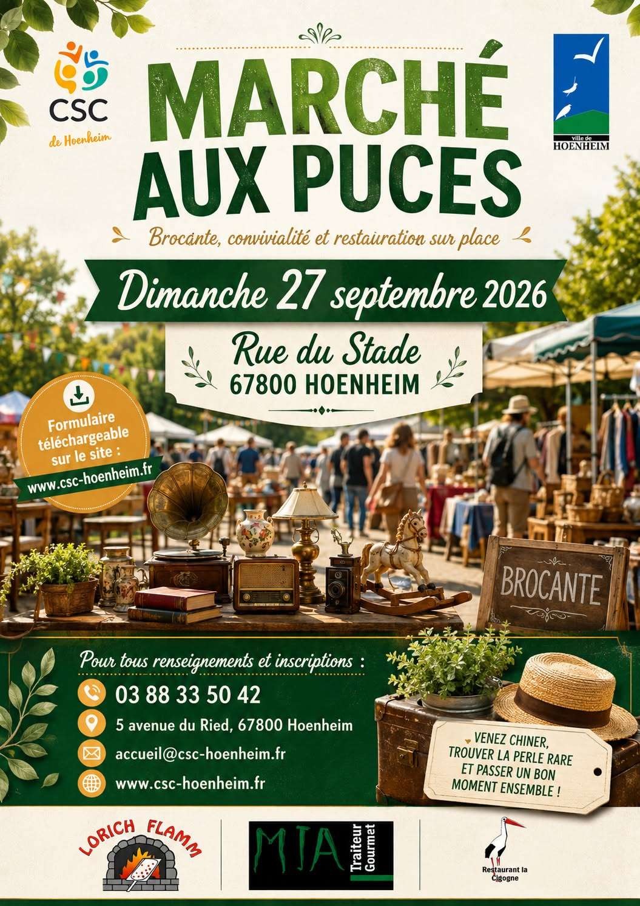

Marché aux puces, rue du Stade
27 septembre à 8 h 00 min - 18 h 00 min
Navigation de l'événement

Le marché aux puces organisé par le centre socioculturel avec le soutien de la ville aura lieu le dimanche 27 septembre 2026 de 8h à 18h rue du Stade à Hoenheim.
Exposants particuliers, votre inscription pour la tenue d’un stand est à demander auprès du centre socioculturel jusqu’au 1er septembre 2026.
Plus d’informations auprès du CSC Hoenheim
5 Av. du Ried, 67800 Hoenheim
Tél.: 03.88.33.50.42
Mail: accueil@csc-hoenheim.fr
Site : www.csc-hoenheim.fr